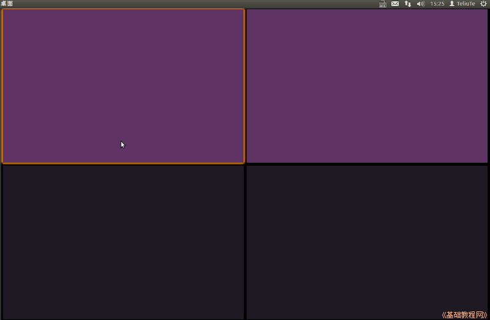

Ubuntu 入门操作指南
作者：TeliuTe 来源：基础教程网
十三、工作区切换器 返回目录 下一课Ubuntu 默认有四个桌面工作区，点击可以切换；
1、工作区切换器
1）点击左侧栏的工作区切换器图标，右边的屏幕被划分成四个方格，每个方格代表一个工作区；

2）在任意一个方格中双击，就可以切换到这个工作区中，原来工作区的内容隐藏起来，
也可以按键盘方向键选中一个工作区，然后按回车键进入这个工作区；
3）点击左侧栏中已打开的程序图标(有白色箭头标记)，也可以自动进入对应的工作区；
4）在程序窗口的标题栏上点右键，可以选择将程序窗口放置到另外一个工作区，还可以设置为总是可见；
5）按键盘上的组合键 Ctrl+Alt+方向键 可以快速切换到下相应的工作区；
本节学习了工作区切换器的基础知识，如果你成功地完成了练习，请继续学习下一课内容；
本教程由86团学校TeliuTe制作|著作权所有
基础教程网：http://teliute.org/
美丽的校园……
转载和引用本站内容，请保留作者和本站链接。